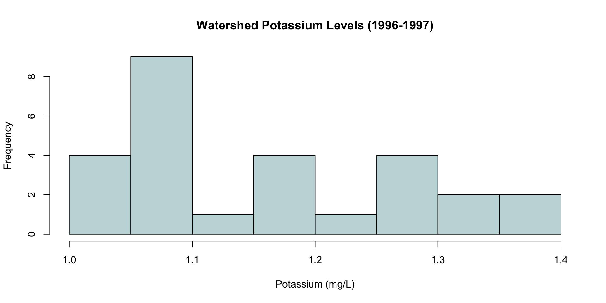
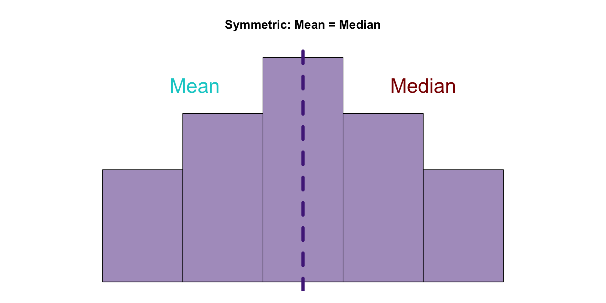
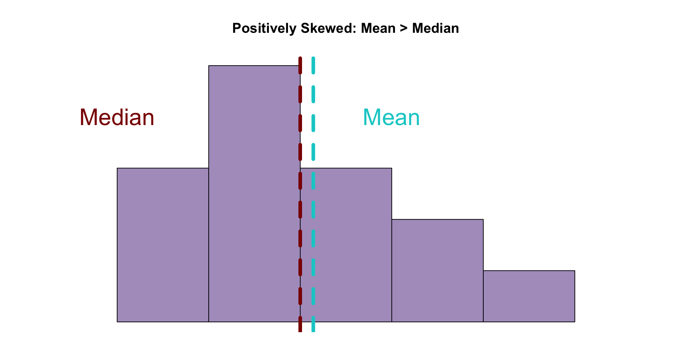
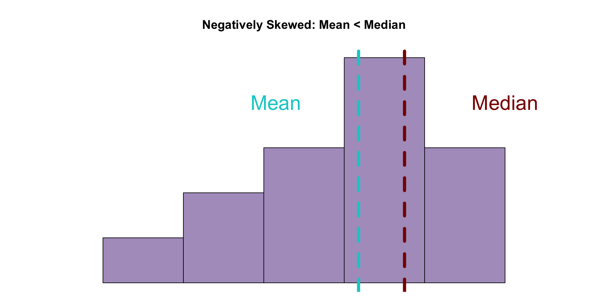
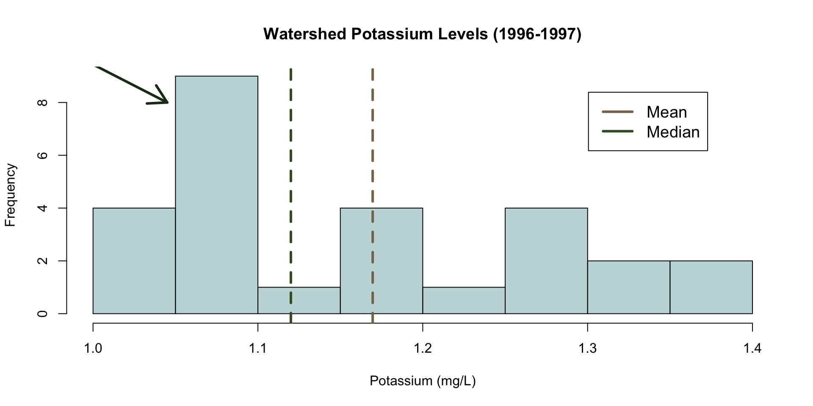
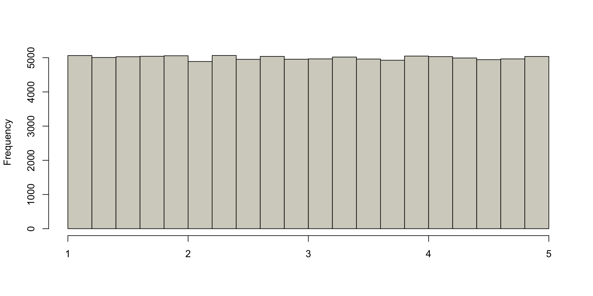
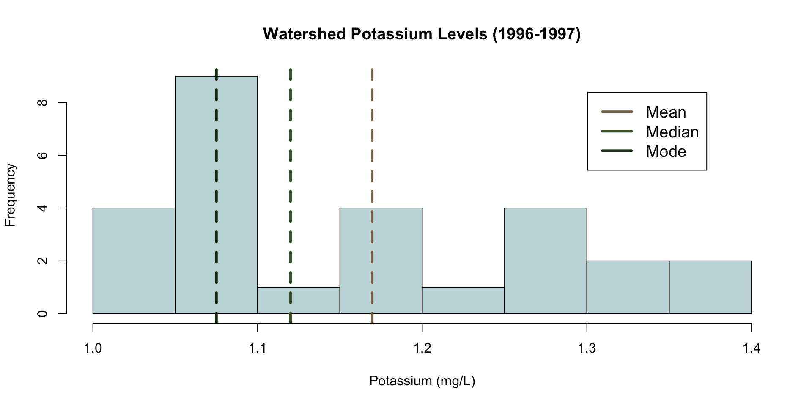
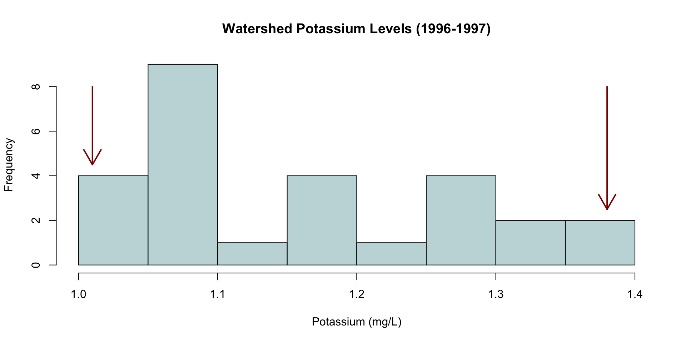

Summary Statistics
STAT 240 - Fall 2025
Math Review
Rules
- Commutative rule
- Order doesn’t matter
- Associative rule
- Order still doesn’t matter
- Distributive rule
- Order matters sometimes
Commutative Rule
When two terms are added\(^1\), order does not matter
\[(a + b) = (b + a)\]
When two terms are multiplied\(^2\), order does not matter
\[(a \times b) = (b \times a)\]
\(^1\) subtraction is just negative addition
\(^2\) division is just fraction multiplication
Quick note
Subtraction is addition
\[ \begin{aligned} a - b = a + (-b) \\ \\ 10 - 5 = 5 \\ \\ 10 + (-5) = 5 \\ \\ 10 - 5 = 10+(-5) \\ \end{aligned} \]
Quick note
Division is multiplication
\[ \begin{aligned} a/b= a\times 1/b \\ \\ 10/5= 2 \\ \\ 10 \times 1/5= 2\\ \\ 10/5= 10 \times 1/5 \end{aligned} \]
Associative Rule
When \(\ge 3\) terms are added, order does not matter
\[a+(b+c)=(a+b)+c \]
When \(\ge 3\) terms are multiplied, order does not matter
\[a \times (b \times c) = (a \times b) \times c\]
Distributive Rule
When a term is multiplied over the addition of two terms, the result is an output equal to the sum of their individual products with the first term
\[ \begin{aligned} a \times (b+c) = (a \times b) + (a \times c) \\ \\ 5 \times(10+2)=5 \times 12=60\\ \\ (5 \times 10) + (5 \times 2) = 50 + 10 = 60 \end{aligned} \]
PEMDAS
Parentheses
Exponents
Multiplication and Division
Addition and Subtraction
Basic Exponent Properties
\[ \begin{aligned} & a^m \times a^n= a^{m+n} \\ & \frac{a^m}{a^n}=a^{m-n}\\ & a^0=1\\ & a^{-m}=\frac{1}{a^m}\\ & (a^m)^n=a^{m\times n}\\ & (ab)^m=a^m\times b^m \\ & \left(\frac{a}{b} \right)^m=\frac{a^m}{b^m} \end{aligned} \]
Logarithms
\[ \begin{aligned} 10^3& =1000 \\ \log_{10}(1000)& =3 \\ \\ a^b& =c \\ \log_a(c)& =b \\ \\ \log_a(xy)& =\log_a(x)+\log_a(y)\\ \log_a(x/y)& =\log_a(x)-\log_a(y)\\ \log_a(x^y)& =y\log_a(x) \end{aligned} \]
Equalities
\[ \begin{array}{|c|c|} \hline = & \text{Is equal to}\\ \hline \equiv & \text{Is defined as}\\ \hline \approx & \text{Is approximately}\\ \hline < & \text{Is less than}\\ \hline > & \text{Is greater than}\\ \hline \le & \text{Is less than or equal to} \\ \hline \ge & \text{Is greater than or equal to}\\ \hline \end{array} \]
Some Definitions
\[ \begin{aligned} \pi \approx 3.14 \\ \\ \tau = 2\pi \\ \\ e \approx 2.718 \\ \\ \log = \log_{10}\\ \\ \ln = \log_e \\ \end{aligned} \]
Univariate Solutions
\[ \begin{aligned} 15=0.5x+10\\ 5=0.5x\\ 2.5=x\\ \end{aligned} \]
\[ \begin{aligned} 22=e^x+2\\ 20=e^x\\ \log(20)=x\\ \end{aligned} \]
Notation
We’re doing Greek letters now
Denoting Data
\[ \begin{array}{|c|c|} \hline n & \text{Sample size} \\ \hline N & \text{Population size} \\ \hline x, \ y, \ z & \text{(conventionally) Data} \\ \hline i,\ j & \text{Indices} \\ \hline x_i, \ y_j & \text{Indexed data} \\ \hline \text{Lowercase Greek letters} & \text{Population parameters} \\ \hline \text{Lowercase Arabic letters} & \text{Sample statistics} \\ \hline \end{array} \]
Summation
Statisticians are mathematicians
Mathematicians like to generalize and simplify
- Because we’re very lazy
Add all of the whole numbers from \(1\) to \(10\) together
\(1+2+3+4+5+6+7+8+9+10=55\)
Inconvenient to write and say
Summation
Consider a single “variable”, \(x_i\), where \(x_1=1, x_2=2, ... , x_{10}=10\)
\[ \begin{aligned} & \sum_{i=1}^{10}x_i=1+2+3+4+5+6+7+8+9+10\\ \\ & \sum_{i=1}^{10}x_i=55\\ \end{aligned} \]
- Convenient to write and say
Notes/Warnings
“In the rabbit hole”
- I’ll eventually slip up with vocabulary
If I say “vector” I mean a line of numbers (column/row in Excel/Google Sheets)
If I say “matrix” I mean a box of numbers (a table)
If I use any term related to calculus, it’s not necessary knowledge, it’s an aside
If you’re confused by a vocab term, raise your hand
\(50/50\) I’m just going crazy
\(100\%\) chance you aren’t alone
Measures of Center
Motivation
The brick they use to build everything in this town
- It’s in my water
“Ogden Limestone”
Kansas doesn’t want random stuff in the water
Potassium is a good indicator for this limestone
How can we determine if the problem is getting worse?
Motivation
Mean
\[\bar x = \frac{1}{n}\sum_{i=1}^nx_i\]
\[\mu = \frac{1}{N}\sum_{i=1}^n x_i\]
“Average”
Most common measure of center
Take all the values in the data, add them up, divide by the number of data points
Mean
\[ \begin{array}{|c|c|c|c|c|} \hline 1.92 & 1.4 & 1.45 & 1.25 & 1.23 \\ \hline \end{array} \]
\[ \begin{aligned} & \bar x = \frac{1}{n}\sum_{i=1}^nx_i\\ \\ & \bar x = \frac{1}{5}(1.92 + 1.4 + 1.45 + 1.25 + 1.23)\\ \\ & \bar x = \frac{1}{5}(7.25)\\ \\ & \bar x = 1.45\\ \end{aligned} \]
Resistance
\[ \begin{array}{|c|c|c|c|c|c|} \hline 1.92 & 1.4 & 1.45 & 1.25 & 1.23 & \boldsymbol{6.52}\\ \hline \end{array} \]
\[\bar x = \frac{1}{6}(7.25+6.52)=2.295\]
\[ \begin{array}{|c|c|c|c|c|c|} \hline 1.92 & 1.4 & 1.45 & 1.25 & 1.23 & \boldsymbol{0.01}\\ \hline \end{array} \]
\[\bar x = \frac{1}{6}(7.25+0.01)=1.208\]
Resistance
Median
\[ \begin{array}{|c|c|c|c|c|} \hline 1.92 & 1.4 & 1.45 & 1.25 & 1.23 \\ \hline \end{array} \]
The simplest measure of center
“True” center or middle value
Organize data from lowest to highest value
If \(n\) is odd: Choose position \({(n+1)\over2}\) in the ordered data set
If \(n\) is even: Pick \(n\over 2\) and \({n \over 2}+1\) and average the two data points
Derivation
\[ \begin{array}{|c|c|c|c|c|} \hline 1.23 & 1.25 & 1.4 & 1.45 & 1.92 \\ \hline \end{array} \]
\[ \frac{5+1}{2}=\frac{6}{2}=3 \]
Derivation
\[ \begin{array}{|c|c|c|c|c|} \hline 1.23 & 1.25 & \boldsymbol{1.4} & 1.45 & 1.92 \\ \hline \end{array} \]
\[ \frac{5+1}{2}=\frac{6}{2}=3 \]
\[\text{Median} = 1.4\]
Derivation
\[ \begin{array}{|c|c|c|c|c|c|} \hline 1.23 & 1.25 & 1.4 & 1.45 & 1.92 & 6.52\\ \hline \end{array} \]
\[\frac{6}{2}=3 \quad \& \quad \frac{6}{2}+1=4\]
Derivation
\[ \begin{array}{|c|c|c|c|c|c|} \hline 1.23 & 1.25 & \boldsymbol{1.4} & \boldsymbol{1.45} & 1.92 & 6.52\\ \hline \end{array} \]
\[\frac{6}{2}=3 \quad \& \quad \frac{6}{2}+1=4\]
\[\text{Median}=\frac{1.4+1.45}{2}=1.425\]
Elimination
\[ \begin{array}{|c|c|c|c|c|} \hline 1.23 & 1.25 & 1.4 & 1.45 & 1.92 \\ \hline \end{array} \]
Elimination
\[ \begin{array}{|c|c|c|c|c|} \hline \xcancel{1.23} & 1.25 & 1.4 & 1.45 & \xcancel{1.92} \\ \hline \end{array} \]
Elimination
\[ \begin{array}{|c|c|c|c|c|} \hline \xcancel{1.23} & \xcancel{1.25} & 1.4 & \xcancel{1.45} & \xcancel{1.92} \\ \hline \end{array} \]
Elimination
\[ \begin{array}{|c|c|c|c|c|} \hline \xcancel{1.23} & \xcancel{1.25} & \boldsymbol{1.4} & \xcancel{1.45} & \xcancel{1.92} \\ \hline \end{array} \]
\[\text{Median}=1.4\]
Elimination
\[ \begin{array}{|c|c|c|c|c|c|} \hline 1.23 & 1.25 & 1.4 & 1.45 & 1.92 & 6.52\\ \hline \end{array} \]
\[ \begin{array}{|c|c|c|c|c|c|} \hline 1.23 & 1.25 & 1.4 & 1.45 & 1.92 & 0.01\\ \hline \end{array} \]
Elimination
\[ \begin{array}{|c|c|c|c|c|c|} \hline \xcancel{1.23} & 1.25 & 1.4 & 1.45 & 1.92 & \xcancel{6.52}\\ \hline \end{array} \]
\[ \begin{array}{|c|c|c|c|c|c|} \hline \xcancel{1.23} & 1.25 & 1.4 & 1.45 & 1.92 & \xcancel{0.01}\\ \hline \end{array} \]
Elimination
\[ \begin{array}{|c|c|c|c|c|c|} \hline \xcancel{1.23} & \xcancel{1.25} & 1.4 & 1.45 & \xcancel{1.92} & \xcancel{6.52}\\ \hline \end{array} \]
\[ \begin{array}{|c|c|c|c|c|c|} \hline \xcancel{1.23} & \xcancel{1.25} & 1.4 & 1.45 & \xcancel{1.92} & \xcancel{0.01}\\ \hline \end{array} \]
Elimination
\[ \begin{array}{|c|c|c|c|c|c|} \hline \xcancel{1.23} & \xcancel{1.25} & \boldsymbol{1.4} & \boldsymbol{1.45} & \xcancel{1.92} & \xcancel{6.52}\\ \hline \end{array} \]
\[ \begin{array}{|c|c|c|c|c|c|} \hline \xcancel{1.23} & \xcancel{1.25} & \boldsymbol{1.4} & \boldsymbol{1.45} & \xcancel{1.92} & \xcancel{0.01}\\ \hline \end{array} \]
\[\text{Median}=\frac{1.4+1.45}{2}=1.425\]
Skewness
Skewness
Skewness
Frequency

Frequency
Mode
\[ \begin{array}{|c|c|c|c|c|} \hline \boldsymbol{3} & \boldsymbol{3} & 5 & 7 & 12 \\ \hline \end{array} \]
Most frequent observation
Resistant
Not always very informative
Easy to skew in a few cases
Imagine a homogeneous data set
Mode
Measures of Spread
Spread
How can we look at everything going on between the data?
Range
Range
Difference between the largest and smallest data value
\[\text{Range} = \text{Maximum} - \text{Minimum}\]
Range
\[\text{Range} = 1.40 - 1.01 = 0.39\]
\[ \begin{array}{|c|c|c|} \hline \text{Mean} & \text{Median} & \text{Range} \\ \hline 1.17 & 1.12 & 0.39 \\ \hline \end{array} \]
Decent context to the data
Reduces reliance on graphics